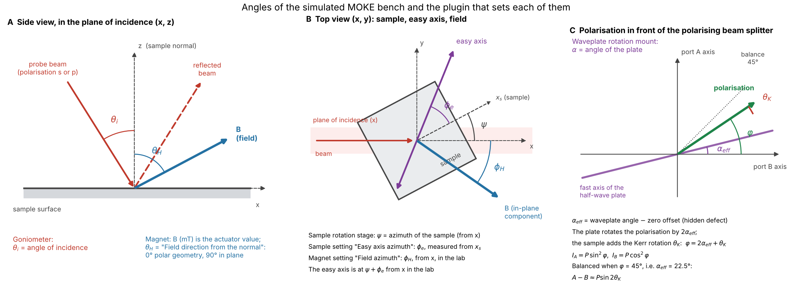

Model of the simulated MOKE bench
This page describes what the five Moke...Sim plugins compute (src/pymodaq_plugins_moke/hardware/simulated_bench.py),
so that a user can choose the settings, check a result by hand, and know what is not simulated. The physics is a
deliberately simple model, written from general knowledge of the magneto-optical Kerr effect. It has not been
reviewed by MOKE experts yet, and nothing in it was compared with a real bench.
The angles are drawn below.

1. Overview
magnet B(t) ──► magnetisation m ──► Kerr rotation θ_K ──► polarisation ──► half-wave plate ──► beam splitter ──► diodes A, B
(MokeMagnetSim) (sample model) (geometry: θ_i, ψ) φ = 2α_eff + θ_K (MokeWavePlateSim) (MokeBalancedSim)
All the plugins share one object, the bench (MokeBench), through the PyMoDAQ controller: give them the same
controller ID, one as Master (it creates the bench), the others as Slave. A plugin alone is its own master.
Lab frame: z is the normal of the sample, x lies in the plane of incidence, y is perpendicular to both.
Plugin |
Quantity |
Unit |
Default |
Where it enters |
|---|---|---|---|---|
|
field |
mT |
0 |
magnet (section 2) |
|
response time |
ms |
50 |
magnet |
|
field direction |
deg |
0, 0 |
magnet, magnetisation |
|
sample azimuth |
deg |
0 |
easy axis in the lab frame |
|
angle of incidence |
deg |
45 |
Kerr rotation |
|
plate angle |
deg |
22.5 |
balance |
|
sample, optics, imperfections |
see sections 3 to 6 |
Settings of the detector are sent to the bench when they change (commit_settings) and at initialisation. Several
detectors or actuators do not conflict: each plugin only sets its own settings.
2. Magnet
The applied field B (mT) follows its target B_t with a first-order response:
The bench computes this lazily, each time somebody asks for the field or for a signal, from the time elapsed since
the previous call. tau = 0 is an instantaneous magnet. The actuator is polled by PyMoDAQ until the field is within
epsilon (0.5 mT by default) of the target, as for a real power supply.
The field is a vector of norm B along the direction given by the polar angle θ_H (0°: along the normal, polar
geometry; 90°: in the plane) and the azimuth φ_H (0°: in the plane of incidence).
B and H. The simulation uses the applied field B = μ0 H in vacuum or air: 1 mT corresponds to 795.8 A/m, or
10 Oe. The actuator axis is in mT; pint converts mT to A/m but not directly to Oe (CGS). Which of B or H is the
right quantity to record is still to be decided with the experts.
3. Magnetisation of the sample
The state of the sample is a unit vector m = (m_x, m_y, m_z) in the lab frame. Two models, chosen in the detector
setting Magnetisation model.
The easy axis e is fixed in the sample: its polar angle θ_e (Easy axis from the normal) and its azimuth φ_e
(Easy axis azimuth) are given in the sample frame. The sample rotation ψ turns it about z, so in the lab frame
its azimuth is φ_e + ψ.
3.1 Stoner-Wohlfarth (default)
A single magnetic domain with a uniaxial anisotropy along e and a Zeeman term. With h = B / H_k the reduced field
vector (H_k, in mT, is the setting Anisotropy field), the energy density divided by 2K is:
m always sits in a local minimum of e on the unit sphere, the one it was already in. When the field changes,
the simulation moves the minimum with the field and lets m relax to it (gradient descent, step 0.4, at most 600
iterations, the field change being cut into steps of at most 2% of H_k). The minimum disappears at the switching
field and m jumps to the other one. This is what produces the hysteresis: the state depends on the history of
the field, not only on its present value. A tiny random tilt of m (1e-4 rad, a stand-in for thermal fluctuations)
is added before each relaxation: without it m would stay forever on an unstable point when the field is exactly
along the easy axis.
Checks that the model reproduces (they are in the tests):
Angle ψ_H between the field and the easy axis |
Switching field |
Loop |
|---|---|---|
0° |
|
square |
45° |
|
open, rounded |
90° |
none (saturation at |
closed, no hysteresis |
The general switching field is H_k / (cos^{2/3}ψ_H + sin^{2/3}ψ_H)^{3/2} (the Stoner-Wohlfarth astroid).
This is a coherent rotation model: no domains, no domain-wall propagation, no thermal activation, no minor-loop
memory beyond what the single minimum gives. Real thin films with a square loop switch by nucleation and wall motion at
a field below H_k: use the tanh model to put a measured coercive field.
3.2 tanh loop
A scalar loop along the easy axis, for a quick and readable hysteresis. The field component along the easy axis is
h = B (\mathbf{B}_{dir} \cdot \mathbf e). Two branches limit the amplitude a = \mathbf m \cdot \mathbf e:
with the coercive field H_c and the switching width w (settings, in mT). When the field increases a becomes
max(a, a_↑(h)), when it decreases a becomes min(a, a_↓(h)). m = a e. The loop is symmetric, saturates at
|a| = 1, and has no angle dependence other than the projection of the field on the easy axis.
4. Kerr rotation
For the magnetisation m and the angle of incidence θ_i, the polarisation rotation (rad) is:
K_pol (Polar Kerr rotation, default 0.5 mrad) is the rotation at saturation with m along +z. K_long
(Longitudinal Kerr rotation, default 0.3 mrad) is the rotation at saturation and 90° incidence with m along +x,
in the plane of incidence. So:
the polar term is independent of the angle of incidence (a simplification),
the longitudinal term grows as
sin θ_iand vanishes at normal incidence,the component
m_y, perpendicular to the plane of incidence (transverse geometry), gives no rotation.
For s polarisation the rotation is multiplied by Kerr s / p ratio (default 1). This is a placeholder: a real sample has different Kerr rotations in s and p, to be measured.
The transverse term changes the reflected intensity, in p polarisation only:
with Transverse reflectivity change K_trans (default 1e-3), visible on the sum channel.
Not simulated: Kerr ellipticity, wavelength dependence, quadratic MOKE (terms in cos 2φ), temperature, dependence
of K on the angle of incidence beyond sin θ_i.
5. Balanced detection
After the sample the beam crosses a half-wave plate and a polarising beam splitter (Wollaston) that sends the components along its two axes to photodiodes A and B.
A half-wave plate whose fast axis makes an angle α_eff with the axis of port B rotates the polarisation by
2 α_eff. The beam starts polarised along the axis of port B, so the angle φ of the polarisation to that axis is:
where α is the angle of the plate (MokeWavePlateSim) and α_0 the zero offset of the plate (detector setting
Waveplate zero offset, default 0°; the user does not know it and finds the balance by looking for a zero
difference). With P the power on the diodes (section 5.1), Malus’ law gives:
At the balance, α_eff = 22.5° (φ = 45°), P_A = P_B when θ_K = 0 and
Away from the balance by δ (in polarisation angle, δ = 2 α_eff - 45°):
offset at zero field:
P sin 2δ;sensitivity to
θ_K: multiplied bycos 2δ(maximal at the balance; 10° of plate isδ = 20°, a factor 0.77);the laser intensity noise cancels in the difference only at
δ = 0(section 6).
5.1 From power to volts
with P_0 the Power on the sample (1 mW) and R the Sample reflectivity (0.5). Each diode converts power to
voltage with the responsivity ρ (0.5 A/W) and the amplifier gain G (1 kV/A by default, setting in kV/A):
The detector emits one 0D dataset, in V, with four channels:
Channel |
Content |
|---|---|
|
|
|
|
|
|
|
|
Recovering the Kerr rotation. The plugins do not compute it, so that any digitiser can be used with the same
analysis. With equal gains, near the balance: θ_K ≈ difference / (2 sum) (rad). In general:
θ_K = ½ arccos(−difference / sum) − 2 α_eff. With the default values, θ_K = 0.5 mrad gives a difference of
250 µV on a sum of 250 mV.
6. Imperfections
The group Imperfections has a master switch (Enabled) and one switch per defect, each with its own value. Nothing
is added when the master switch is off, and grab_data is then deterministic.
Defect (setting) |
Default |
Model |
|---|---|---|
Shot noise |
on |
white noise on each diode current, |
Electronic noise |
on, 20 µV rms |
independent Gaussian noise on each channel voltage |
Laser intensity noise |
on, 0.1 % rms |
the power |
Gain imbalance A/B |
off, 2 % |
the gain of A is multiplied by |
Faraday rotation of the optics |
off, 5 µrad/mT |
|
Slow drift of the polarisation |
off, 0.2 mrad, 60 s |
|
Naverage in grab_data averages that number of independent readings.
7. What the model does not do
No domain structure, no minor loops with return-point memory, no thermal or viscous effects, no dependence on the sweep rate other than through the magnet response time.
No Kerr ellipticity, quarter-wave compensator, PEM or lock-in (a modulated detection is planned as a separate detector).
No dependence on the wavelength or the temperature, which exist in the MOKE ontology (
moke:Wavelength,moke:SampleTemperature).No drift or hysteresis of the magnet itself (remanent field, heating), no Hall probe: the field read back is the modelled field.
The simulation gives no semantic annotation; adding the role, quantity kind and unit of the data is the job of the extension that uses the plugins.
8. Using it
Add the five plugins to a Dashboard experiment with the same controller ID, the magnet as
Master.Set the sample (anisotropy field, easy axis, Kerr rotations) and, if wanted, the imperfections in the detector.
Look for the balance: scan the plate angle and find
difference = 0(22.5° plus the hidden offset).Scan the field with the magnet as the scan axis and the detector as the signal: a hysteresis loop of the
differencechannel. Changeθ_i,ψ, the field direction or the plate to see how the loop changes.
The tests in tests/test_simulated_bench.py check the loop, the balance, the sensitivity, the geometry and the
imperfections; tests/test_simulated_plugins.py drives the plugins as the Dashboard does (not through its GUI).